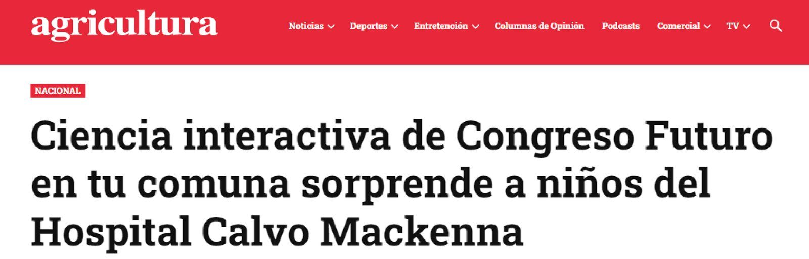
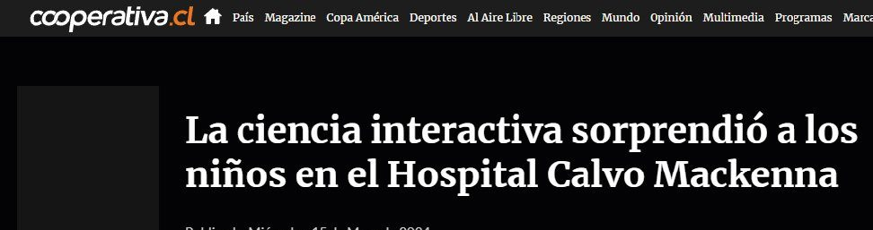

Congreso Futuro en tu comuna
Feria de ciencia en el Hospital de Niños Dr. Luis Calvo Mackenna, con el stand de robótica de Ideo Maker. La jornada tuvo cobertura nacional.

Congreso Futuro en tu comuna abrió su temporada 2024 en el hall del Servicio de Atención a las Personas del Hospital de Niños Dr. Luis Calvo Mackenna. Niñas y niños de atención ambulatoria participaron de una feria de ciencia con tres estaciones: Astronomía del Instituto Milenio de Astrofísica MAS, el Festival de Matemáticas de la Sociedad Matemática de Chile, y el stand de robótica de Ideo Maker.
Llevar una actividad maker a un hospital cambia las restricciones. Los participantes llegan desde atención ambulatoria, los tiempos no se controlan y el espacio no es un aula. La actividad tiene que funcionar en sesiones cortas, entrar y salir sin montaje pesado, y sostenerse con lo que haya sobre una mesa.
Este tipo de actividades le alegra el corazón a todos: a nuestros niños, a sus familias, a funcionarios y a toda la comunidad. El compromiso es que permanezca en el tiempo.
La cita es de Michel Royer, director del Hospital de Niños Dr. Luis Calvo Mackenna.
Cobertura
La jornada fue cubierta por el Senado de Chile, Canal 13, El Mostrador, Radio Agricultura, Cooperativa y AdPrensa, entre otros.


Sobre las imágenes
Esta página muestra solo los titulares de la cobertura. Las fotografías que acompañaban esas notas son de niñas y niños en un hospital, y no se publican acá.